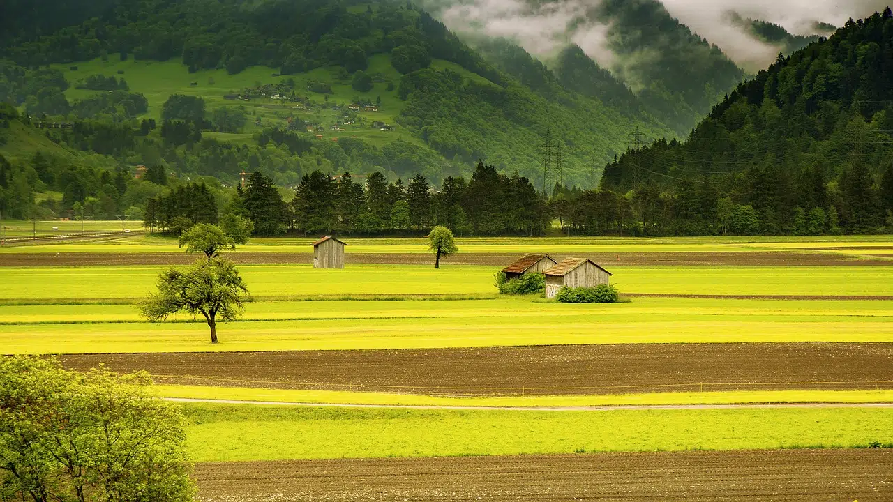
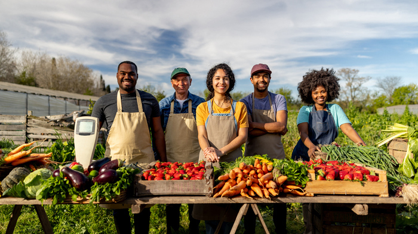

O que é
Neste bloco, iremos aprufundar um pouco sobre o assunto.

Exemplos
Exemplos de Tecnologias da Cidade usadas no Campo

Qual a Importância
Qual a Importância dessas Tecnologias?

Eu sou a Thais
🤖Tecnologias da Cidade usadas no Campo🌱

Neste bloco, iremos aprufundar um pouco sobre o assunto.
Exemplos de Tecnologias da Cidade usadas no Campo

Qual a Importância dessas Tecnologias?